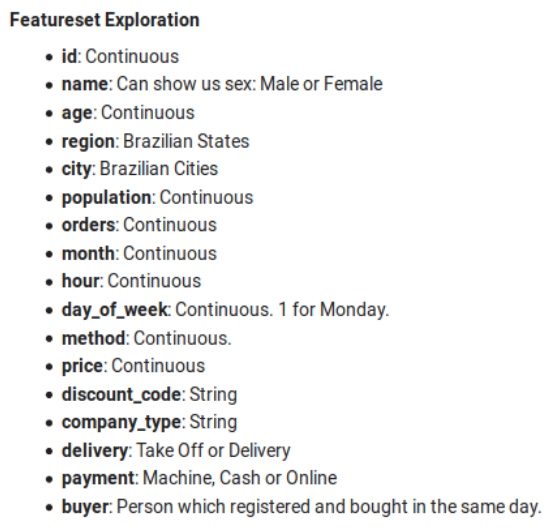
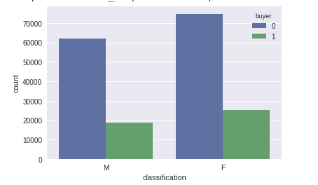
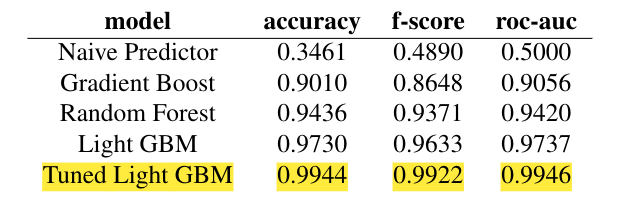

Predicting Buyers for Food Delivery Platforms
This project has the objective to create a Machine Learning Model to predict whether a user that just registered will buy or not. Predicting such action could influence from user experience until predicting demands for restaurants.
TL;DR
This project has the objective to create a Machine Learning Model to predict whether a user that just registered will buy or not. Predicting such action could influence from user experience until predicting demands for restaurants. The metrics used to evaluate this project was mainly Area Under the Curve (AUC), complemented by Accuracy and F-Score. A benchmark with five classifiers was created and a Light Gradient Boost Model was chosen. After tuning and reducing the number of features, the model achieves 99.0% of accuracy, followed by 98.2% and 99.1% of F-score and ROC-AUC, respectively. The predictor aims to be implemented in production to help the company understand better customer behavior. With that in mind, the first step was made moving the best classifier to the AWS SageMaker. There, it will be connected with the streaming data from the database and predict the customer next steps in real time.
Project Overview
Immerse in a sector that expects to exceed $ 250 billion by 2022 [1], every improvement put you ahead of the competition. The FoodTech Industry is transforming the way we eat and it is being pulled by a generation which demands far more from services. In the US, 63% of Americans abandoned their cart due to bad customer experience [2]. Furthermore, because of the sectors wideness and variety, not only start ups are joining the race but corporate food companies as well. From the farm, passing through logistics and ending up in the customer’s table, the food sector is a rich soil to apply cutting edge technology. Being part of the last mile agents, the food delivery apps are the very end of this food chain. Working in direct contact with the customers, it is the bridge between clients, drivers and restaurants. In the food delivery branch the platform is sticky: 80\% of consumers rarely or never change to a new application [4]. So retention techniques as reorder buttons, discounts and promotions are the core to get and keep an active base of digital consumers. Knowing your customer and predicting their next steps becomes essential in a such rapid pace environment. Predicting a customer purchase can influence directly in his user experience. It is possible to suggest his favorite cuisine, understand how logistics can scale or offer a discount code as an incentive. Thus, this project aims to create a classifier which is capable of predicting whether or not a customer will place an order soon after registration.
Problem Statement
Taking action upon belief can be naive in a fully connected measurable world. With an average transaction order between $ 25 to $ 50 [3], a discount coupon of $ 5 represents 10 to 20% of its value. At the same time, use discounts to convincing new customers to order is a common practice. Furthermore, to give discount code to everyone which is logging for the first time, could be a big waste of budget. From the dataset, is possible to notice that 36% of customers tend to buy in the same day of registration. Meaning that every improvement in this number increases directly the company’s revenue. In a scenario where we have 100.000 new orders a day and (using) a discount code of $ 5, if we have a solution that gives discount only to customers that will probably not place an order in the same day, it could represent savings of $ 180k/day. The solution for the problem stated before consist in identifying potential buyers and taking action to delivery a better user experience. And at the same time, instigate non buyers to place an order. This can be done using the biographic and demographic data present in the main dataset to understand these customers types.
Metrics
For binary classification problems the most common metric to evaluate model’s performance is the Area Under the Curve (AUC). It can tell us how good a classifier identify two classes. The AUC of a classifier is equal to the probability that the classifier will rank a randomly chosen positive example higher than a randomly chosen negative example. As scale-invariant, it can measure how well the predictions are ranked and does not consider its absolute values. Together with AUC, the use of Accuracy and F-score complement the evaluation step.
Analysis
For the inputs, we have two datasets: the main one which contains demographic (age, population, etc) and order information (date, payment type, delivery method). Together they have 464.969 lines where each one is an order. This dataset contains two years of data from part of the company’s operation. And we have a second dataset which translates peoples name to gender, called here “names.csv”. This is necessary because the raw information in the database is not complete. The main dataset was obtained with consent from food delivery startup and is composed of the following dimensions:

Figure 1. Type of variable associated with each feature
While the first 10 columns tell us information about the client, the second part digs deeper into consumer habits. All the dimensions could influence the client desire to buy, hence all of them was used.
Figure 2. Datasets used to train the model
The names to gender dataset were download from a public website [5] and are based in the 2010 Brazilian Sense. It is provided information about the environment such as city size, number of orders in this particular city (that may reveal that people in cities with more orders are likely to buy) and country’s region. We have timewise data, which indicate the likelihood o buy in some hours and days. And the logistic data telling if the client used a coupon, which kind of cuisine this kind of customer order, which payment type they prefer. All to try to find a pattern in people who buy soon after registration. The binary classifier to classify each user is put manualy using Python during the code, in a column named ‘Buyer’ where 1 stands for True.
Exploratory Visualization
In this section, we will have a closer look in the dataset and try to identify patterns already. A great way to start is to look a the datasets age:

Figure 3. Age and Gender Exploration
Instantly we notice that there are several outliers. This may happen because of the input method in the registration form or by users deliberately choosing to put the wrong date of birth. A outliers removal technic is needed to improve the classifier accuracy.
Another feature that comes to mind is gender. Gender may influence in customer desire to buy. But from Figure 3 we can not see a major influence upon putting a order or not. We can conclude that we have around 20\% more women in this dataset, but the target buyers are present in both genders equally.
33
Figure 4. Order and Population from Target Users
Taking a look in the relationship between number of orders and population, we can see that it isn’t a linear function. Most of the data is concentrated in cities with population less than 200.000 and with less than 25 thousand orders. With this in mind, we can look at our target users in this range, as in Figure 4, to try to find a pattern. Clearly this users are in small cities, where competition is not so fierce and the number of orders are small, indicating that the app is new in the town.,
Figure 5. Relationship between number of orders and population
In other hand, we can identify a pattern looking to the scatter plot below (Figure \ref{fig:scatagehour}) of hour by age. There is two well defined groups: people younger than 20 years and seniors from 40 to 80 years old. This two groups tend to order their first order between 10 AM and 8 PM. The gap between 20 and 40 years old, are mostly compose of people that do some research before place an order, or are impacted by some marketing campaign but do not buy instantly.
Figure 6. Identifying buyers per age and hour
Algorithms and Techniques
The first step is to prepare the data. We have two datasets: one containing information about customers who bought in the same day of registration and other containing customers that ordered the following day or after. These two must be merged as a main file. The main dataset does not contain buyers gender, which is main feature to predict customer behavior. So a name to gender dataset is needed as part of feature engineering, together with the creation of additional features tha would help the algoritm. Furthermore, a step to drop non relevant features as names and IDs is needed.
Once the main dataset is put together, is proceed with preprocessing the data. Transforming skewed continuous features, such as orders and population that has vastly large numbers, as well as normalizing and hot-encoding variables performs a critical step. Although some algorithms can handle categorical features internally, this step will be performed to avoid future trouble. At the same time, outliers and null values must be removed, hence algorithms can be very sensitive to such numbers. We have seen already the need to remove outliers while looking to the age, population and orders range of the data.
With all data prepared, is time to start understanding all features and which algorithm would be used. We start by defining a Naive Predictor, as stated before, which would set our lower boundary. Next we will explore three models: Random Forest, GradientBoost and LightGBM (LGBM).
Figure 7. Decision Tree Example
This three algorithms are based in Decision Trees. Decision Trees works by creating questions and answering them. Here each node is a feature, each link is a class and each leaf is the output of such a branch, as stated below. For example, from Figure 7, we notice that people under 20 years old tend not to buy on business days. These models are part of the ensemble learning methods and predict by combining the outputs from multiple individual trees. While Random Forest Method create trees independently using random slices from data and choose from the best, the GradientBoost builds one tree at the time and improves over the last one in an iterative method, fixing errors from the previous. Although LGBM is also a tree based algorithm, it grows tree leaf-wise, maximizing classes and not deep-wise. Which can reduce the losses, choosing the leaf with max delta loss. \par For selecting the best model, first we need a training pipeline, which would provide an automated way for training multiple classifiers. Then, three models should be defined taking into consideration the data and the goal of the project. Since this project aims to go to production, prediction time is the key evaluation metric here. Also, recall is more important than precision, because we are more interested in find all possible customers instead of find only buyers that would buy. \par The next step is to improve the chosen model to obtain a better ROC Curve, F-score and Accuracy. To do this, is possible to use GridSearch from Sklearn library. With the best classifier in hands, we must then save it to use it later. It is possible too, to create a model with fewer features, in order to simplify a real-time predictor.
Benchmark
The most simple benchmark is called the Naive Predictor. The Naive Predictor can be explained as follows: if we take the whole customer base, and instead of guessing which of them would buy in the same day of registration, we admitted that all of them are potential buyer. How often would we be right? Accordingly to the dataset, only 34.6% of the time we would be right. It is proposed also 3 more models to serve as benchmark.
Results
I’ll skip the methodology used and go directly to the results achieved. Data preprocessing, implementation metrics and refinements were excluded from this blog post to keep it short. This items and more can be found at the full article.
Model Evaluation and Validation
Using the training pipeline stated before, the results for the three supervised learners are showed below. The dotted line in the image show the Naive Predictor performance for comparation.
Figure 8. Performance of the three models
Looking to the training part, we can notice that the Gradient Boost Classifier takes up 20 times more time to train in the full training set. Furthermore, it has the worst performance when compared with the others on the accuracy and the F-score metrics. In other hand, the Random Forest Classifier seems to overfit the data, with accuracy close to 100\% on training.
The LGBM which, in turn, has the fastest training time, also has a more balanced accuracy and f-score performance. The downside of this model is that it has the longer time to predict if a customer is a truly target user, around 0,35 seconds. But it owns the better general performance in the test set.
Once chosen the model is time to improve its performance through tuning the hyperparameters. Using the gridParams and the scoring method as scoring = 'AUC': 'roc_auc' the following configuration was the best one achieved. The comparison before and after the Grid Search is showed below.
>> print(grid_fit.best_estimator_)
LGBMClassifier(boosting_type='gbdt', class_weight=None, colsample_bytree=1.0,
importance_type='split', learning_rate=0.3, max_bin=512,
max_depth=-1, min_child_samples=20, min_child_weight=0.001,
min_data_in_leaf=300, min_split_gain=0.0, n_estimators=100,
n_jobs=-1, num_leaves=64, objective=None, random_state=None,
reg_alpha=0.0, reg_lambda=0.0, silent=True, subsample=1.0,
subsample_for_bin=200000, subsample_freq=0)
It could improve the ROC-AUC metric in 2,09%, which is the main metric for this project. Moreover, improvements of 2,89\% and 2,14% can be seen in accuracy and f-score.
Unoptimized model
------
Accuracy score on testing data: 0.9730
F-score on testing data: 0.9633
ROC-AUC score on testing data: 0.9737
Optimized Model
------
Final accuracy score on the testing data: 0.9944
Final F-score on the testing data: 0.9922
Final ROC-AUC score on the testing data: 0.9946
Last but not least, the ROC-AUC curve for the LGDM Classifier is showed in Figure 9. This plot show us the True Positives Rate (TPR) on the y-axis ax and the False Positive Rate (FPR) on x-axis. Showing the trade-off between sensitivity (TPR) and specificity (1 – FPR). From this analysis we can see that the model has a prediction rate of false positives closer to 0\% and 99\% to true positives. Meaning how well the model can distinguish from the two classes, buyers and non buyers. The blue line shows what we should expect from a random classifier, meaning the classifier can’t separate between classes.
Figure 9. LGDM Classifier’s ROC-AUC Curve
Justification
After careful consideration, the Light GBM was chosen. It has proven to have the best performance of all models. Despite its predicting time, it is still suitable for the application. The table below show the results of all models serving as a benchmark for this project.

The Tuned Light GBM is definitely the best solution for the problem proposed. It can clearly distinguish possible buyers from people that are only checking the platform. This model is only the first layer in a possible chain of predictors to better understand consumers behavior and add features to food delivery platforms. Further, using PCA and Feature Importance, a model containing only 5 features were trained. Using these 5 features: ‘id’,’density’,’month’,’classification’,’day_of_week’, an Accuracy of 99.02%, F-Score of 98.42% and a ROC-AUC of 99.10% were achieved.
Conclusion
The process to start this project began choosing a real problem to solve. With my experiences in grocery/food delivery platforms, I thought that a good feature to have would be predicting if a consumer would buy or not. Besides improving the customer experience, it could help the platform convert more users into buyers. The first step was to choose between a model that could generalize an identify if old and new customers would buy or just to understand new users behavior. The last was chosen due its simplicity and probably better accuracy. A big challenge was to gather the data from the database. More than that, choose the right period of time to extract and which information would be more important. Once this was decided, the preprocessing phase was by far the most time-consuming. It is the most delicate step and can change the entire output from the model, if done incorrectly. I forgot to remove duplicate UserID once, which give the model accuracy as low as the naive predictor. From then the project was pretty straight forward. The training pipeline and the use of GridSearch, although time-consuming as well, was simple to handle. With the LGBM tuned and working, I tried to use some feature reduction to see how much of its accuracy we could keep. I expect to deploy this classifier to production and hope to see applied in some feature in the future.
Would you like to receive the most important news and trends in AI in just one email every end of the month? Subscribe below and I’ll send you the 10 most important news in Artificial Intelligence
Subscribe to Edge AI Guru
Get the latest posts delivered right to your inbox